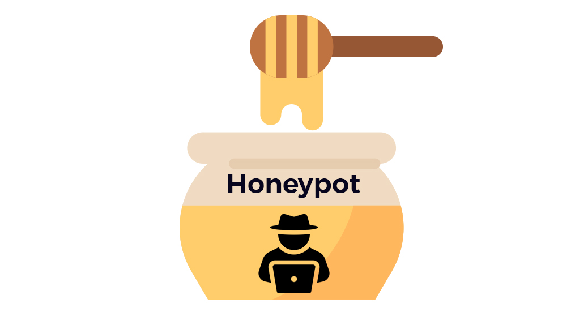

Linux
Linux macOS
macOS Wireshark
Wireshark Burp Suite
Burp Suite Python
Python Bash
Bash JavaScript
JavaScript Java
Java PHP
PHP Azure
Azure Terraform
Terraform Docker
Docker

01 / Honeypot & Telemetry
SSH Honeypot with Elastic Stack
SSH honeypot with certificate authentication, paired with an Elastic Stack pipeline for log ingestion, dashboards, and attacker-behaviour analysis. Captures session activity, credential attempts, and command execution for downstream threat intelligence.